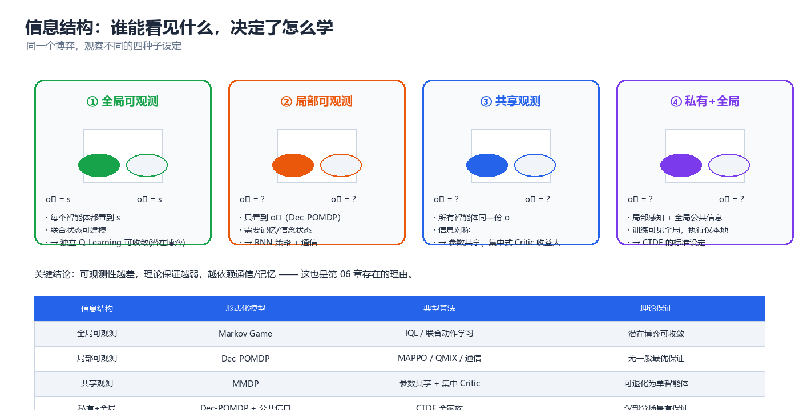
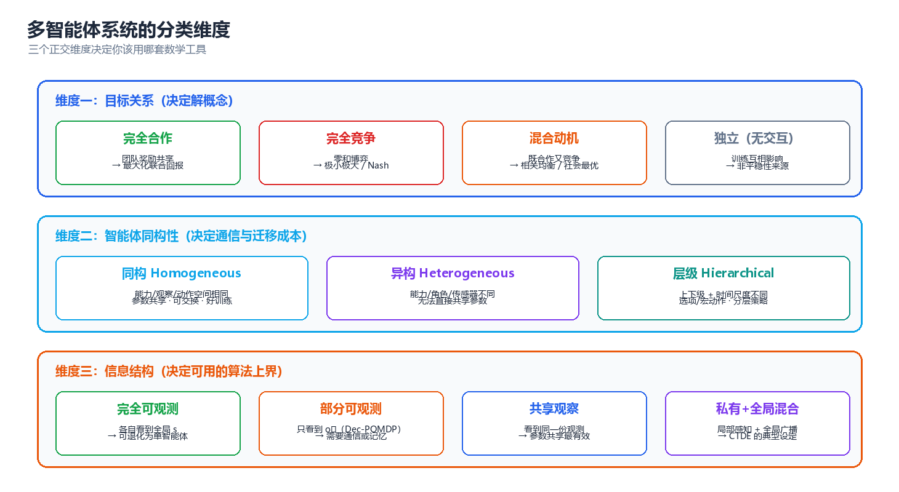

第 01 章 多智能体系统基础
单智能体问题的语言是 MDP，多智能体问题的语言是随机博弈（Stochastic Game）。本章只做一件事：把"一群共享同一个世界的决策者"翻译成一个能求解、能验证、能工程落地的数学对象——并在这个过程中指出非平稳性、信用分配、可扩展性这三道后续章节都无法绕开的坎。
一、多智能体问题的形式化
形式化决定了三件事：你能不能用现成算法、你的解有没有存在性保证、你的评测指标是否真的在度量你想度量的问题。本节从 MDP 出发，逐层补上"多主体"带来的结构变化。
1.1 从 MDP 到 Markov Game
单智能体的基本模型是马尔可夫决策过程（Markov Decision Process, MDP）：
其中 \(P(s'\mid s,a)\) 为转移概率，\(R(s,a)\) 为即时奖励，\(\gamma\in[0,1)\) 为折扣因子。关键性质只有一条：转移与奖励只依赖"我的动作"，于是 \(\pi\) 的优化是一个良定义的静态优化问题。
当决策者变为 \(n\) 个，模型升级为随机博弈 / Markov Game（Littman, 1994）：
其中联合动作 \(\mathbf{a}=(a_1,\dots,a_n)\in\mathcal{A}=\prod_i A_i\) 是所有人选择的向量，转移 \(P(s'\mid s,\mathbf{a})\) 与奖励 \(R_i(s,\mathbf{a})\) 都依赖整个联合动作；每个主体只能拿到局部观测量，策略因此写成 \(\pi_i:\Omega_i\to\Delta(A_i)\)，输入是动作–观测历史 \(\tau_i=(o_i^0,a_i^0,\dots)\) 而非全局状态。值函数为：
注意这个表达式里出现的东西：每个主体的值函数里都乘着所有人的策略。这就是全部困难的代数根源——\(V_i\) 的"环境"包含 \(n-1\) 个正在被优化的函数。
单智能体 MDP 多智能体 Markov Game
┌────────────────────────┐ ┌──────────────────────────────────┐
│ s_t ──▶ π ──▶ a_t │ │ s_t ──▶ π_i ──▶ a_i,t │
│ │ │ │ │ │
└────────────┼───────────┘ └────────────┼─────────────────────┘
▼ ▼
P(s'|s, a), R(s,a) P(s'|s, a_1, …, a_n), R_i(s, a)
唯一受控对象 没有任何主体能单独决定它
│ │
▼ ▼
策略梯度有目标函数 π_{-i} 在变 ⇒ 我的"环境"在变（非平稳）
与 MDP 的逐项对照：
| 维度 | 单智能体 MDP | 多智能体 Markov Game | 带来的新问题 |
|---|---|---|---|
| 动作 | \(a \in A\) | \(\mathbf{a} \in \prod_i A_i\) | 联合动作空间随 \(n\) 指数增长 |
| 转移 | \(P(s'\mid s,a)\) | \(P(s'\mid s,\mathbf{a})\) | 我的动作效果被别人的选择调制 |
| 奖励 | \(R(s,a)\) | \(R_i(s,\mathbf{a})\) | 目标可能冲突 ⇒ 需要"解概念" |
| 观测 | 通常 \(s\) 直接可见 | \(o_i = O_i(s;\mathbf{a})\) | 部分可观测 ⇒ 理论保证大幅减弱 |
| 策略 | \(\pi(a\mid s)\) | \(\pi_i(a_i\mid \tau_i)\) | 策略互为对方的非平稳环境 |
| 值函数 | \(V^{\pi}(s)\)，唯一 | \(V_i^{\boldsymbol{\pi}}(s)\)，耦合 | 不动点从"一个方程"变成"一个方程组" |
| 最优性 | 存在唯一最优值 \(V^*\) | 一般不存在单一最优策略 | "解"退化为均衡，且常常不唯一 |
| 收敛性 | 表格式必收敛 | 一般无收敛保证 | 见 §3.1 与 §7.2 |
规模代价有多大？ 状态与动作数量不变时，仅转移表一项的膨胀就是 \(|A|^{n-1}\) 倍：
# 联合转移表的规模: |S| × |A|^n × |S| 对 |S| × |A| × |S|
S, A = 16, 4
print(f"{'n':>3} | {'单智能体 MDP 转移表':>20} | {'多智能体联合转移表':>22} | {'膨胀倍数':>10}")
for n in (1, 2, 4, 8):
mdp, mg = S * A * S, S * (A ** n) * S
print(f"{n:>3} | {mdp:>20,} | {mg:>22,} | {A ** (n - 1):>9,}x")
# 预期输出:
# n | 单智能体 MDP 转移表 | 多智能体联合转移表 | 膨胀倍数
# 1 | 1,024 | 1,024 | 1x
# 2 | 1,024 | 4,096 | 4x
# 4 | 1,024 | 65,536 | 64x
# 8 | 1,024 | 16,777,216 | 16,384x
核心思想：从 MDP 到 Markov Game 不是"加了一个下标 \(i\)"，而是把"转移与奖励由我决定"换成"转移与奖励由全体联合决定"。所有多智能体算法——CTDE、值分解、通信、机制设计——都是在为这一句抽象支付代价或索取补偿。
1.2 奖励结构分类：完全合作 / 零和 / 混合动机 / 一般和
奖励之间的关系决定了你手里有哪些理论工具。这是比"用什么算法"更早要回答的问题。
| 类型 | 英文 | 奖励关系 | 典型场景 | 可用的理论 | 章节 |
|---|---|---|---|---|---|
| 完全合作 | MMDP（Multi-agent MDP） | \(R_1=\dots=R_n\) | 多机器人搬运、团队协作 RTS | 势博弈、值分解、IGM | 05 |
| 零和 | Zero-sum Game | \(R_1=-R_2\)（\(n=2\)） | 对抗博弈、围棋、网络安全 | 极小极大、CFR、自博弈 | 03、05 |
| 混合动机 | Mixed-motive | 既想合作又想占便宜 | 公共品、谈判、交通 | 相关均衡、机制设计、声誉 | 03、04 |
| 一般和 | General-sum | 任意 | 绝大多数真实系统 | 无一般性保证，只能特例化 | 03、05 |
完全合作（MMDP）：\(R_1=\dots=R_n=R(s,\mathbf{a})\)，目标是唯一的团队回报，但信息仍然分布——每个主体看不到全局状态，还要为"奖励记在谁头上"发愁（正是 §3.2）。合作型 MARL 的标准设定就是 MMDP 或 Dec-POMDP。
零和：\(n=2\) 且 \(R_1=-R_2\)，没有共同利益可谈，唯一合理的解是鞍点。它的特殊价值在于极小极大定理给出单值 \(\max_{\pi_1}\min_{\pi_2}V=\min_{\pi_2}\max_{\pi_1}V\)，"最优"重新变得良定义——这是自博弈在围棋、德州扑克上成功的理论前提；一旦不再严格零和，单值性立刻消失。
混合动机与一般和：个体理性与集体理性冲突（囚徒困境、公共品博弈、议价）。"解"本身不唯一（多重均衡），"高效解"也不稳定（可被单边偏离套利），只能靠机制设计改掉激励结构——见第 04 章。
对学习算法最常用的折中是势博弈（Potential Game）：
即"我改变动作带来的收益变化，等于全局势函数 \(\Phi\) 的变化"。它的地位在于：独立学习者的动力学等价于在势函数上做单智能体爬山，"独立 Q-learning 在势博弈中收敛"这类结论才有立足点（第 05 章展开）。
| 奖励结构 | 是否存在"最优单值" | 独立学习能否收敛 | 推荐方法 |
|---|---|---|---|
| MMDP（含势结构） | 是（团队最优） | 可以（势博弈／单调博弈） | 值分解 QMIX、MAPPO |
| MMDP（一般合作） | 是，但均衡可能多个 | 不保证（可能落到次优均衡） | CTDE + 参数共享 |
| 零和 | 是（鞍点、唯一值） | 不保证（可用极小极大规避） | 自博弈、CFR、极小极大 Q |
| 混合动机 | 否 | 否 | 机制设计 + 均衡选择 |
| 一般和 | 否 | 否 | 特例化、近似、仿真评估 |
⚠️ 不要用"奖励是否共享"判断问题难度。共享奖励的团队问题依旧难（信用分配 + 非平稳性一个不少）；对立奖励的零和问题反而因单值性而更容易。
1.3 观察与信息结构
奖励结构管"想要什么"，信息结构管"知道什么"，后者往往更决定可行性。部分可观测的团队问题写作 Dec-POMDP（Decentralized Partially Observable MDP）：
与 Markov Game 的区别只在 \(O\)：主体 \(i\) 只能拿到 \(o_i\)，策略必须写成 \(\pi_i(a_i \mid \tau_i)\)。Dec-POMDP 的复杂度是 NEXP-完全（即使 \(n=2\) 也不行），所以实践中几乎总是"近似算法 + 通信 + 记忆"，而非精确求解。

图：同一个博弈在四种观察设定下的差异——可观测性越差，理论保证越弱，越依赖通信与记忆。
| 信息结构 | 形式化 | 主体看到什么 | 典型算法 | 理论保证 | 现实对应 |
|---|---|---|---|---|---|
| 全局可观测 | Markov Game | \(s\) | 联合动作学习、IQL | 势博弈下可收敛 | 小型仿真、教学环境 |
| 共享观测 | MMDP | 同一份 \(s\) 或同一份观测 | 参数共享 + 集中式 Critic | 可退化为单智能体问题 | 共享屏幕的协作游戏 |
| 局部可观测 | Dec-POMDP | 各自的 \(o_i\) | MAPPO、QMIX、通信式 MARL | 无一般最优性保证 | 机器人、传感器网络 |
| 私有 + 公共 | Dec-POMDP + 公共信号 | \(o_i\) + 广播的 \(m\) | CTDE 全家族 | 仅部分场景有保证 | 拍卖、竞标、LLM 编排 |
公共信息（public information） 是四档里最被低估的一档：所有主体都能看到、且所有人都知道"所有人都能看到"的信号，即公共知识（common knowledge）。它等价于一个免费的相关装置——有了它，主体可以不通信就协调到同一个均衡（见 §4.1）。工程上一个公共随机种子、一个时间戳、一个全局 ID 都是免费的公共信号。
信息结构不是客观事实，而是设计变量：可以加通信（把私有的 \(o_i\) 变成部分公共，第 06 章）、加记忆（用 RNN / Transformer 把 \(\tau_i\) 压成充分统计量）、或加共享上下文（LLM 系统里那块人人可读写的黑板，第 08 章）。很多"算法调不动"的问题，真正原因是信息结构不完备。
⚠️ 最常见的建模事故：训练时把全局状态塞给每个主体，部署时拿不到，于是性能腰斩。CTDE 的合法性正好建立于此——训练可以看全局，执行必须只看局部，集中式 Critic 只在训练期存在。如果"集中式"信息在执行期还需要，那它不是 CTDE，而是中心化控制。
1.4 时序设定：同时行动 vs 顺序行动
最后一层形式化是时间粒度：一个"回合"里所有主体一起选动作，还是轮流选？这不是实现细节，它改变博弈本身。
同时行动（Parallel API）：所有主体基于各自的局部观测同时选动作，环境一次性推进，\(a_{i,t}\perp a_{j,t}\)（同期内不可见）。顺序行动（Agent-Environment Cycle, AEC API）：每步只有一个主体行动，环境立即更新，后续主体看到的是已被改写过的状态——这正是 PettingZoo 的 AEC 语义。
两者在博弈论上对应不同结构：同时行动给出纳什型解（互相为最佳回应），顺序行动给出 Stackelberg 型解（后动者直接最佳回应先动者）。因此"同一份收益矩阵"在两个 API 下可以有不同的均衡值：
# 匹配硬币 (matching pennies): 匹配则行玩家 +1, 不匹配 -1 (零和)
import numpy as np
ACT = ["L", "R"]
def rp(a1, a2):
return 1 if a1 == a2 else -1
# --- Parallel: 枚举混合策略网格求纳什均衡 ---
eq = []
for p in np.linspace(0, 1, 201):
for q in np.linspace(0, 1, 201):
uL = q * rp("L", "L") + (1 - q) * rp("L", "R")
uR = q * rp("R", "L") + (1 - q) * rp("R", "R")
vL = p * (-rp("L", "L")) + (1 - p) * (-rp("R", "L"))
vR = p * (-rp("L", "R")) + (1 - p) * (-rp("R", "R"))
r_ok = (abs(uL - uR) < 1e-9) or (uL > uR and p > 0.9999) or (uR > uL and p < 1e-4)
c_ok = (abs(vL - vR) < 1e-9) or (vL > vR and q > 0.9999) or (vR > vL and q < 1e-4)
if r_ok and c_ok:
eq.append((p, q))
p, q = eq[0]
val = p * (q * rp("L", "L") + (1 - q) * rp("L", "R")) + (1 - p) * (q * rp("R", "L") + (1 - q) * rp("R", "R"))
print(f"[Parallel API] 同时行动: 混合纳什均衡 P_row(L)={p:.3f}, P_col(L)={q:.3f}, 行玩家均衡收益 = {val:+.3f}")
print(f" 网格上共找到 {len(eq)} 个均衡点 (唯一混合均衡, 无纯策略均衡)")
# --- AEC: 后动者观察到先动者的动作后最佳回应 ---
for first in (1, 2):
if first == 1:
a1, a2 = "L", "R"
print(f"[AEC] 智能体1先动: {a1} -> 智能体2 观察后最佳回应 {a2} -> 智能体1 收益 {rp(a1, a2):+d}")
else:
a2 = "L"
a1 = "L"
print(f"[AEC] 智能体2先动: {a2} -> 智能体1 观察后最佳回应 {a1} -> 智能体1 收益 {rp(a1, a2):+d}")
print("信息价值 = |0.000 - (-1)| = 1.0: 行动顺序改变了博弈结构, 不只是实现细节")
# 预期输出:
# [Parallel API] 同时行动: 混合纳什均衡 P_row(L)=0.500, P_col(L)=0.500, 行玩家均衡收益 = +0.000
# 网格上共找到 1 个均衡点 (唯一混合均衡, 无纯策略均衡)
# [AEC] 智能体1先动: L -> 智能体2 观察后最佳回应 R -> 智能体1 收益 -1
# [AEC] 智能体2先动: L -> 智能体1 观察后最佳回应 L -> 智能体1 收益 +1
# 信息价值 = |0.000 - (-1)| = 1.0: 行动顺序改变了博弈结构, 不只是实现细节
同一份收益矩阵，同时行动下均衡值 0，顺序行动下先动者 −1、后动者 +1。零和博弈里先动是劣势（对手看穿了你的选择）；但在合作型团队任务里顺序行动通常是优势，因为它是一条免费的信息传递通道。
| 对比项 | Parallel API | AEC API |
|---|---|---|
| 一步的语义 | 全体同时选动作 | 单个主体行动，环境立即更新 |
| 博弈类型 | 纳什型 | Stackelberg 型 |
| 信息集 | 各主体的 \(\tau_i\) | \(\tau_i\) ∪ 本轮前序动作 |
| 时钟假设 | 要求同步时钟、等频决策 | 允许异步与不同频率 |
| 动态智能体集 | 需固定 \(n\) | 天然支持主体加入/退出/死亡 |
| 典型实现 | PettingZoo parallel_env、SMAC |
PettingZoo env、棋盘类环境 |
| 适用场景 | 连续控制、同频协作 | 回合制、层级、含"外部主体"的场景 |
核心思想：选择 API 就是选择博弈类型。系统里存在响应延迟或层级决策时，AEC 更诚实；所有主体等频同步时，Parallel API 更简单更快。两者可以互相模拟，但模拟会引入额外的信息结构假设，必须显式写清。
二、分类的四个维度
形式化之后的第一步是分类：你要处理的是哪一类问题？分类的意义不在于贴标签，而在于迅速圈定可用方法与可用保证。

图：目标关系、同构性、信息结构构成分类的三个基础维度，学习范式是叠加在其上的第四个选择。
四个维度的分工：目标关系决定用哪个解概念（第 03/04 章）；同构性决定参数能否共享（第 02 章）；信息结构决定要不要通信（第 06 章）；学习范式决定训练时谁看谁的输入（第 05 章）。前三个是问题的属性，第四个是你的设计选择。
2.1 维度一：目标关系
| 目标关系 | 判据 | 冲突来源 | 有效度量 | 首选方法 |
|---|---|---|---|---|
| 完全合作 | 存在全局 \(R\)，且 \(R_i = R\) | 无（但存在搭便车/信用分配） | 团队回报、成功率 | 值分解、MAPPO |
| 完全竞争 | \(R_1 = -R_2\) | 零和，完全对立 | 对最优对手的胜率（Elo） | 自博弈、极小极大 |
| 混合动机 | 存在共同利益，也存在个体套利机会 | 个体最优与集体最优不一致 | 社会福利 + 个体收益分布 | 机制设计 + MARL |
| 一般和 | 无特殊结构 | 随场景而变 | 通常只能仿真统计 | 特例化、启发式 |
要区分两个容易混淆的概念：目标函数是否相同与利益是否一致。目标函数相同（\(R_i=R\)）不代表没有冲突——"我多出力"与"你多出力"互斥，这就是搭便车；目标函数对立（零和）也不代表没有合作空间——重复博弈中双方仍可用策略性合作换长期收益（"以牙还牙"有效的原因）。
核心思想：目标关系不决定"能不能合作"，只决定"合作需不需要额外机制来维持"。完全合作需要的是信用分配，混合动机需要的是激励相容。
2.2 维度二：同构性（同构 / 异构 / 层级）
| 类型 | 判据 | 参数能否共享 | 建模要点 | 典型系统 |
|---|---|---|---|---|
| 同构 | 所有主体观测空间、动作空间、能力相同 | 可以，且强烈推荐 | 共享参数 + 个体 ID/索引 | 无人机编队、同型号 AGV |
| 异构 | 观测/动作/能力不同 | 不能直接共享 | 用 \(\langle\)role, type\(\rangle\) 条件化 | 无人车 + 无人机 + 地面站 |
| 层级 | 存在指挥–执行关系，时间尺度不同 | 分层各自共享 | 上层出意图/子目标，下层执行 | 战术指挥、LLM planner–worker |
同构最好处理：对称性使参数共享（parameter sharing）既能省 \(n\) 倍参数，又能把 \(n\) 条经验并成一条梯度信号，样本效率提升接近 \(n\) 倍（§3.3 实测）。代价是某个主体能力退化（传感器失效）时，共享策略会一起退化。
异构的常用做法是引入角色（role）/类型嵌入：\(\pi_i(a_i\mid\tau_i,z_i)\)，\(z_i\) 为角色向量——一套参数通过条件化产生多种行为，是"共享"与"独立"之间最实用的折中。角色可人工指定，也可自动学出（角色发现，第 05 章）。
层级的关键不是"谁指挥谁"，而是时间尺度分离：上层低频决策（"去 A 区取货"），下层高频执行（避障、走位）。数学上对应选项（option）/半马尔可夫决策过程（SMDP），LLM 系统里对应"planner 出计划、worker 执行"（第 08 章）。最大风险是意图翻译失真：抽象目标在下层看来不可达或含义模糊，于是"上下层互相甩锅"。
2.3 维度三：信息结构
判定只有两个问题：每个主体在决策时刻能看到什么？是否存在所有主体都能看到的公共信号？
能看到全局状态 ⇒ 可直接用联合动作学习（Markov Game）；只能看到 \(o_i\) ⇒ 必须用局部历史近似（Dec-POMDP，理论保证从 NEXP-完全退化为"仅近似"）。存在公共信号 ⇒ 可免费协调（相关均衡可达）；不存在 ⇒ 必须通信或依赖约定，否则协调概率随主体数指数下降；通信不可靠时，还得额外学"说什么"（第 06 章）。
实用建议：把信息结构当成第一个优化变量。很多"算法调不动"的问题，真正原因是信息结构不完备——加一条公共信号、加一段共享记忆，效果往往好过换算法。
2.4 维度四：学习范式
转移 \(P\) 与奖励 \(R\) 已知时，前三个维度就够了。一旦未知、必须靠交互学习，就多出第四个选择：谁在训练时看得到谁的信息。
| 范式 | 英文 | 训练时各自输入 | 执行时输入 | 参数量 | 样本效率 | 可扩展性 | 代表算法 |
|---|---|---|---|---|---|---|---|
| 独立学习 | Independent Learning (IL) | 自己的 \(\tau_i\) | 自己的 \(\tau_i\) | \(n\times\) | 低（非平稳） | 好 | IQL、IPPO |
| 联合学习 | Joint Learning (JL) | 联合动作 \(\mathbf{a}\)、全局 \(s\) | 需全局信息 ⇒ 常不可执行 | \(1\)（超动作空间） | 高（但空间爆炸） | 极差 | 联合 Q-learning |
| 集中训练分布执行 | CTDE | 全局 \(s\)（Critic）+ 局部 \(\tau_i\)（Actor） | 仅局部 \(\tau_i\) | \(n\times\)（Actor 可共享） | 高 | 好 | MADDPG、QMIX、MAPPO |
| 种群 / 自博弈 | Population / Self-play | 对手池中的历史策略 | 局部 | 多份 | 高 | 中 | PSRO、League、AlphaStar |
核心思想：IL → JL → CTDE → 种群，是从"最省事但最不稳"到"最能利用全局信息但最贵"的一条谱系。CTDE 之所以成为主流，是因为它把"训练期的全局信息"与"执行期的局部信息"解耦——它买了 JL 的样本效率，却只付 IL 的执行代价。
JL 的代价极其具体：超动作空间是 \(|\mathcal{A}|=\prod_i|A_i|\)，\(n=10\)、\(|A_i|=4\) 时是 \(4^{10}\approx1.05\times10^{6}\)，\(n=20\) 时已是 \(1.1\times10^{12}\)，所以 JL 只在 \(n\le3\) 的教学环境里常见。
2.5 分类速查表
给定你的问题特征，直接查下表定位模型与章节：
| 你的问题特征 | 行为主体数 | 属于哪一类 | 该用第几章的方法 |
|---|---|---|---|
| 团队共享一个奖励，观测局部 | 2–10 | 合作 Dec-POMDP | 05（MAPPO / QMIX） |
| 团队共享一个奖励，观测全局 | 2–10 | MMDP | 05（值分解 / 参数共享） |
| 双方对抗、胜负严格互补 | 2 | 零和随机博弈 | 03（极小极大）、05（自博弈） |
| 有共同利益但要防套利 | 2–100 | 混合动机一般和博弈 | 04（机制设计、拍卖、声誉） |
| 需要协商分工、通信可靠 | 3–50 | 合作协调问题 | 07（合同网、DCOP、任务分配） |
| 有带宽限制、需学"说什么" | 2–20 | 通信式 Dec-POMDP | 06（CommNet、DIAL、IC3Net） |
| 强对手、需要鲁棒 | 2–种群 | 零和 / 一般和 + 对手建模 | 05（种群训练、PSRO） |
| 任务开放、需要常识与语言 | 2–∞ | LLM 智能体社会 | 08（编排、角色、校验节点） |
| 硬安全约束必须满足 | 任意 | 约束 MDP（CMDP） | 本章 §5.3、第 10 章 |
| 需要形式化保证 | 少量 | 时序逻辑规范 | 本章 §5.1–5.2 |
反向查表同样好用：参数共享要求同构性（否则异构主体被迫用同一策略）；值分解（QMIX 类）要求团队价值可分解且混合函数单调（否则分布式贪心执行不再最优）；CTDE 要求执行期能拿到 \(\tau_i\)、训练期能拿到 \(s\)（否则训练–执行不匹配，性能腰斩）；独立学习要求势博弈或单调结构（否则不收敛、陷入循环）；模型检验要求状态空间有限可枚举（否则组合爆炸）。
三、与单智能体的三大本质差别
这是本章的核心。多智能体不是"把单智能体复制 \(n\) 份"：有三件事会从根上坏掉，且每一件都需要专门的机制来对付。
共享环境 + 多个同时学习的决策者
│
┌─────────────────────┼─────────────────────┐
▼ ▼ ▼
① 非平稳性 ② 信用分配 ③ 可扩展性
环境在学：P(s'|s,a) 团队奖励是共享的： 联合动作/观测/策略
→ P(s'|s,a,π_{-i}) R 该记在谁头上？ 的空间指数增长
│ │ │
▼ ▼ ▼
收敛性保证失效 梯度信号无区分度 计算与参数不可承受
│ │ ▼
▼ ▼ 参数共享 / 因子化 /
对手建模、CTDE、 反事实基线、差奖励、 局部性 / 值分解 / 注意力
种群训练、双时间尺度 Shapley 值分摊 │
│ │ │
└─────────────────────┴─────────────────────┘
第 05 章给出完整算法族
3.1 非平稳性：我的环境里住着另一些学习者
单智能体 RL 收敛性的全部依据是环境静态。多智能体里这个前提立刻失效：从主体 \(i\) 的视角看，"环境"的转移实际是边际化掉对手动作后的转移：
而 \(\pi_{-i}\) 本身正在被优化。于是：Bellman 目标变成移动目标，经验回放里的旧数据对应的"环境"已不存在，"收敛到不动点"这件事失去依据；主体的探索还会同时改变对手的分布。
用最经典的例子证明它不收敛。 石头剪刀布（Rock-Paper-Scissors, RPS）是唯一的对称零和博弈，唯一纳什均衡是均匀随机 \((\tfrac13,\tfrac13,\tfrac13)\)，均衡值 0。现在让两个主体各跑一个标准 Q-learning（状态 = 对手上一步动作），看它们会不会收敛到这个均衡：
import random
ACTS = ["R", "P", "S"]
BEATS = {"R": "S", "P": "R", "S": "P"} # key 击败 value
def payoff(a, b):
if a == b:
return 0
return 1 if BEATS[a] == b else -1
class QLearner:
"""Q-learning, 状态 = 对手上一步动作 (即 π(a_i | 对手动作))"""
def __init__(self, alpha=0.1, gamma=0.9, eps=0.1, seed=0):
self.Q = {s: {a: 0.0 for a in ACTS} for s in ACTS}
self.alpha, self.gamma, self.eps = alpha, gamma, eps
self.rng = random.Random(seed)
self.last = self.rng.choice(ACTS)
def act(self, explore=True):
if explore and self.rng.random() < self.eps:
return self.rng.choice(ACTS)
return max(ACTS, key=lambda a: self.Q[self.last][a])
def policy(self):
return "|".join(max(ACTS, key=lambda a: self.Q[s][a]) for s in ACTS)
def update(self, s, a, r, s_next):
self.Q[s][a] += self.alpha * (r + self.gamma * max(self.Q[s_next].values()) - self.Q[s][a])
def step(A, B, explore):
a, b = A.act(explore), B.act(explore) # 同时出拳
ra = payoff(a, b)
A.update(A.last, a, ra, b) # 下一个"状态" = 对手本次动作
B.update(B.last, b, -ra, a)
A.last, B.last = b, a
return (a, b)
def lag_match(log, lag): # 滞后 lag 步的联合动作匹配率
n = len(log) - lag
return sum(1 for i in range(n) if log[i] == log[i + lag]) / n
def min_period(seq, maxp=24): # 极限环最小周期
for p in range(1, maxp + 1):
if all(seq[i] == seq[i + p] for i in range(len(seq) - p)):
return p
return None
for seed in (0, 2):
A, B = QLearner(seed=seed), QLearner(seed=seed + 100)
for _ in range(20000):
step(A, B, True) # 训练相
print(f"--- seed={seed}: 训练 20000 步后 A 策略={A.policy()} B 策略={B.policy()} ---")
log = [step(A, B, True) for _ in range(3000)] # 测量相: 保留探索
print(f" 测量相 eps=0.1: h(1)={lag_match(log,1):.3f} h(2)={lag_match(log,2):.3f} h(3)={lag_match(log,3):.3f}")
log2 = [step(A, B, False) for _ in range(3000)] # 测量相: 关掉探索
print(f" 测量相 eps=0 : h(1)={lag_match(log2,1):.3f} h(2)={lag_match(log2,2):.3f} h(3)={lag_match(log2,3):.3f}")
print(f" 极限环最小周期 = {min_period(log2[-240:])} 尾部 12 步: " + " ".join(f"{a}{b}" for a, b in log2[-12:]))
print("纳什参照: 9 个联合动作各占 1/9=0.111, 三个滞后匹配率也都是 0.111")
# 预期输出:
# --- seed=0: 训练 20000 步后 A 策略=P|S|R B 策略=P|S|R ---
# 测量相 eps=0.1: h(1)=0.155 h(2)=0.125 h(3)=0.275
# 测量相 eps=0 : h(1)=0.002 h(2)=0.000 h(3)=0.000
# 极限环最小周期 = 6 尾部 12 步: PR PS RS RP SP SR PR PS RS RP SP SR
# --- seed=2: 训练 20000 步后 A 策略=P|S|R B 策略=P|S|R ---
# 测量相 eps=0.1: h(1)=0.044 h(2)=0.023 h(3)=0.174
# 测量相 eps=0 : h(1)=0.002 h(2)=0.000 h(3)=0.000
# 极限环最小周期 = 6 尾部 12 步: PR PS RS RP SP SR PR PS RS RP SP SR
# 纳什参照: 9 个联合动作各占 1/9=0.111, 三个滞后匹配率也都是 0.111
怎么读这个结果？
- 训练结束学到的是一个确定性策略串
P|S|R，即"永远出能击败对手上一步动作的那一手"。 - 关掉探索后，轨迹进入最小周期为 6 的极限环（尾部
PR PS RS RP SP SR严格循环），从不停在任何一个联合动作上，更不会收敛到纳什要求的均匀混合。周期可手算：该策略写成映射 \(F(a,b)=(\text{beat}(b),\text{beat}(a))\)，则 \(F^3(a,b)=(b,a)\)（交换两人动作）、\(F^6=\mathrm{Id}\)——周期必然是 6，与实测完全吻合。 - 保留探索时，滞后 3 步的匹配率（0.275 / 0.174）明显高于纳什参照 0.111，这是周期结构在噪声下留下的指纹。
⚠️ 最危险的地方在于：这两个 Q-learning 的平均收益始终在 0 附近，看起来像"已经收敛到均衡值"。循环的长期平均恰好可能等于均衡值，所以"看收益曲线平不平"根本不能作为收敛判据——必须看策略/联合动作分布（上面的滞后匹配率与最小周期）。
对照上述结果，工程上缓解非平稳性的手段：
| 手段 | 原理 | 代价 | 章节 |
|---|---|---|---|
| 集中式 Critic（CTDE） | 把对手策略从"环境的一部分"变成"Critic 的输入" | 需要全局信息，仅限训练 | 05 |
| 对手建模 / 策略指纹 | 显式学 \(\hat{\pi}_{-i}\)，让 \(\pi_{-i}\) 变成可观测量 | 额外网络与样本 | 05 |
| 双时间尺度 | 让对手更新比我慢，近似恢复"环境静止" | 收敛慢 | §7.2 |
| 种群 / 自博弈 | 让对手分布趋于平稳（历史策略池） | 计算量大，循环风险仍在 | 05 |
| 经验回放过滤 | 丢掉"对手策略已过时"的旧样本 | 样本利用率下降 | 05 |
| 势博弈 / 单调博弈结构 | 让目标存在全局势，恢复收敛性 | 需要结构假设 | 03、05 |
3.2 信用分配：团队奖励该记在谁头上
信用分配（credit assignment）分两层：时间信用分配（是第 3 步还是第 97 步的动作导致了好结局？单智能体 RL 靠折扣与 TD 已解决）与结构信用分配（当 \(R_1=\dots=R_n\) 时，这份奖励属于谁？多智能体独有）。
第二个问题在数学上很尖锐：完全合作设定下所有主体共享同一奖励信号，于是每个主体收到的策略梯度里的"好/坏"评价完全相同，谁出力谁偷懒梯度看不出来。极端情况下出现搭便车（free-riding）：一个主体永远不动，团队仍得奖励，它的梯度仍是正的。
反事实基线（counterfactual baseline） 是这一族方法里最优雅的一个。思路是：要评价主体 \(i\) 的动作 \(a_i\) 好不好，就问"如果只有我换动作、其他人不变，团队回报会差多少"：
这就是 COMA（Counterfactual Multi-Agent policy gradients）的核心，它有两个漂亮性质：无偏性（\(\mathbb{E}_{a_i\sim\pi_i}[A_i]=b_i-b_i=0\)，基线只依赖 \(\mathbf{a}_{-i}\)，与 \(a_i\) 无关，故不引入偏差）与个体化（基线对每个主体不同，\(A_i\) 真正区分"谁的贡献大"）。
下面的三主体数值例子把它算出来（团队回报 = 个体贡献之和 + 只有在全队都选"参与"时才发放的协同奖励）：
from itertools import product
import numpy as np
# 三主体, 每人动作为 0(不参与)/1(参与)
# 团队回报 = Σ c_i * a_i + (全员参与时的协同奖励 BONUS)
C = {"a1": 1.0, "a2": 0.5, "a3": 0.2}
BONUS = 5.0
def Q(prof):
v = sum(C[k] * val for k, val in prof.items())
return v + (BONUS if all(x == 1 for x in prof.values()) else 0.0)
prof = {"a1": 1, "a2": 1, "a3": 1} # 当前联合动作
q_joint = Q(prof)
V = float(np.mean([Q(dict(zip(C, v))) for v in product((0, 1), repeat=3)])) # 团队均值基线
print(f"联合动作 a={tuple(prof.values())} 的团队回报 Q={q_joint:.2f} 共享基线 V(s)={V:.3f}")
print(f"{'个体':<5}{'反事实基线 b_i':>14}{'反事实优势 A_i':>16}{'零均值校验':>13}{'共享基线优势':>14}")
for k in prof:
vals = [Q(dict(prof, **{k: v})) for v in (0, 1)] # 只改我一个人的动作
b = float(np.mean(vals))
zero_mean = float(np.mean([v - b for v in vals]))
print(f"{k:<5}{b:>14.2f}{q_joint - b:>16.2f}{zero_mean:>13.2f}{q_joint - V:>14.2f}")
sum_adv = sum(q_joint - float(np.mean([Q(dict(prof, **{k: v})) for v in (0, 1)])) for k in prof)
print(f"反事实优势之和 = {sum_adv:.2f} (三类基线都不改变梯度期望, 区别只在归因粒度与方差)")
# 预期输出:
# 联合动作 a=(1, 1, 1) 的团队回报 Q=6.70 共享基线 V(s)=1.475
# 个体 反事实基线 b_i 反事实优势 A_i 零均值校验 共享基线优势
# a1 3.70 3.00 0.00 5.23
# a2 3.95 2.75 0.00 5.23
# a3 4.10 2.60 0.00 5.23
# 反事实优势之和 = 8.35 (三类基线都不改变梯度期望, 区别只在归因粒度与方差)
读法：反事实优势逐个不同（3.00 / 2.75 / 2.60，\(a_1\) 贡献系数最高故优势最大，归因方向正确）；零均值校验全为 0.00，说明该基线无偏，减掉它只降方差、不改梯度方向；共享基线给三体完全相同的优势 5.23，它对"谁贡献了什么"完全无知。
| 方法 | 基线 / 分摊方式 | 需要额外信息 | 是否无偏 | 主要弱点 |
|---|---|---|---|---|
| 团队均值 / 全局状态基线 | \(b=\bar R\) 或 \(V(s)\) | 无（\(V\) 需全局 \(s\)） | 是 | 无归因能力，方差大 |
| 反事实基线（COMA） | \(b_i(s,\mathbf{a}_{-i})\) | 可查询的 \(Q(s,\mathbf{a})\) | 是 | 每主体一次反事实求值 |
| 差奖励（difference reward） | \(R(s,\mathbf{a})-R(s,(\mathbf{a}_{-i},a_i^{\text{null}}))\) | 一个"默认动作" | 是（若构造正确） | 默认动作的选择影响效果 |
| 势函数塑形（PBRS） | \(\Phi(s,\mathbf{a})-\gamma\Phi(s')\) | 需构造势函数 | 不改变最优策略 | 势函数难设计 |
| Shapley 值分摊 | 边际贡献的公理化均摊 | \(2^n\) 次求值（可采样） | 公平（唯一满足公理） | 组合爆炸（近似见第 04 章） |
| 值分解（QMIX 类） | 学 \(Q_{\text{tot}}=f(Q_1,\dots,Q_n)\) | 单调性 / IGM 条件 | 依分解假设 | 分解可能不存在（第 05 章） |
核心思想：信用分配的本质是"在保留信号的前提下，去掉所有与我无关的方差"。实践中还有一个便宜的近似：给每个主体配置一个可验证的个体奖励（比如 AGV 自己的空驶里程），用 \(\alpha R_{\text{team}}+(1-\alpha)R_i\) 混合——代价是引入新的目标偏置，必须靠工艺参数调平。
3.3 可扩展性：联合空间的三重指数
第三道坎最直白：多智能体系统里有四个量在指数增长。
| 维度 | 增长形式 | 典型数值（\(n=8\)，\(|S_i|=400\)，\(|A_i|=5\)） | 缓解手段 | |------|---------|--------------------------------|---------| | 联合动作 | \(|\mathcal{A}| = \prod_i |A_i| = |A|^n\) | \(5^8 = 390{,}625\) | 值分解、自回归分解 | | 联合观测 | \(|\Omega|^n\) | \(400^8 \approx 6.6\times10^{20}\) | 参数共享、注意力、局部性 | | 联合状态 | \(|S|^n\) | 同上（组合爆炸） | 因子化、抽象、只保留相关特征 | | 参数总量 | 独立网络 \(= n\times\) 单网络 | \(8\times5{,}061 = 40{,}488\) | 参数共享（\(1\times\)） |
用一个真实的小 MLP 实测"参数共享 vs 独立网络"：
import numpy as np
class NumpyMLP:
"""单主体策略网络: obs -> 64 -> 64 -> |A|, 用 tanh 激活"""
def __init__(self, obs, hid, act, seed=0):
rng = np.random.default_rng(seed)
self.W1 = rng.normal(0, 0.1, (obs, hid)); self.b1 = np.zeros(hid)
self.W2 = rng.normal(0, 0.1, (hid, hid)); self.b2 = np.zeros(hid)
self.W3 = rng.normal(0, 0.1, (hid, act)); self.b3 = np.zeros(act)
def forward(self, o):
h = np.tanh(o @ self.W1 + self.b1)
h = np.tanh(h @ self.W2 + self.b2)
return h @ self.W3 + self.b3
def n_params(self):
return sum(a.size for a in (self.W1, self.b1, self.W2, self.b2, self.W3, self.b3))
net = NumpyMLP(8, 64, 5)
print(f"单网络参数量 = {net.n_params():,} (numpy 逐层相加之实测值)")
print(f"集中式 Critic 输入维度 = 8n; n=16 时 = {8*16}, n=64 时 = {8*64}")
print(f"{'n':>3} | {'独立网络总参数':>14} | {'参数共享总参数':>14} | {'节省':>6} | {'联合动作空间 |A|^n':>22}")
for n in (1, 2, 4, 8, 16, 32):
ind, shr = n * net.n_params(), net.n_params()
js = f"{5 ** n:,}" if n <= 16 else f"{5.0 ** n:.3e}"
print(f"{n:>3} | {ind:>14,} | {shr:>14,} | {n:>5}x | {js:>22}")
# 预期输出:
# 单网络参数量 = 5,061 (numpy 逐层相加之实测值)
# 集中式 Critic 输入维度 = 8n; n=16 时 = 128, n=64 时 = 512
# n | 独立网络总参数 | 参数共享总参数 | 节省 | 联合动作空间 |A|^n
# 1 | 5,061 | 5,061 | 1x | 5
# 2 | 10,122 | 5,061 | 2x | 25
# 4 | 20,244 | 5,061 | 4x | 625
# 8 | 40,488 | 5,061 | 8x | 390,625
# 16 | 80,976 | 5,061 | 16x | 152,587,890,625
# 32 | 161,952 | 5,061 | 32x | 2.328e+22
三点解读：
- 参数增长是线性的，联合动作空间是指数的。参数共享把 \(n\times\) 压成 \(1\times\)，但一点也没解决动作空间——\(n=32\) 时联合动作空间已是 \(2.3\times10^{22}\)。可扩展性从来不靠"省参数"解决，而靠避免枚举联合动作（值分解、自回归分解、注意力）。
- 参数共享的隐藏收益：\(n\) 个主体的经验进入同一组参数，等效样本量提升约 \(n\) 倍，这在样本稀缺的 MARL 里往往比"省参数"更重要。
- 集中式 Critic 的输入是线性增长的（\(8n\) 维），这是 CTDE 便宜的原因；但若把联合动作也当 Critic 输入，就是 \(|A|^n\) 维——不可行。所以值分解方法学习混合函数 \(Q_{\text{tot}}=f(Q_1(s,a_1),\dots,Q_n(s,a_n))\)，用 \(n\) 个低维输入替代一个天文数字维输入（第 05 章）。
⚠️ 参数共享的三个陷阱：(1) 异构主体不能共享；(2) 共享引入虚假的对等假设，某个主体传感器退化后仍被当作同质个体；(3) 需要角色分化的任务里，完全共享会拖慢分化。实践中"共享主干 + 个体嵌入/角色条件"的混合结构最稳。
四、解概念地图
"求解"在单智能体里就是"找到最优策略"。多智能体里这件事没有唯一答案：什么叫解，取决于你认为什么叫做"稳定"。
4.1 占优 / 纳什 / 相关 / 合作 / 社会最优
占优均衡（dominant-strategy equilibrium）：无论别人怎么做我都不差，即 \(u_i(\sigma_i^*,\sigma_{-i})\ge u_i(\sigma_i,\sigma_{-i})\) 对所有 \(\sigma_i,\sigma_{-i}\) 成立。它最"结实"（不需要关于对手的任何假设），但经常不存在（匹配硬币完全没有占优策略）。
纳什均衡（Nash equilibrium, NE）：没有任何主体能通过单方面偏离而变好：
其存在性有保证（Nash, 1950：任何有限博弈至少存在一个混合策略纳什均衡），这是整个学科能"分析"的合法性来源。代价是计算它属于 PPAD-完全，一般没有多项式算法，而且往往不唯一。
相关均衡（correlated equilibrium, CE）：允许存在公共信号 \(w\)（交通灯、随机种子、拍卖师），每个主体按建议行动且没人愿意偏离建议：
两个优点：总存在（可行集是非空凸多面体）且可用线性规划（LP）在多项式时间内求出。工程含义直接：能提供公共信号时，协调问题就从"求纳什"（PPAD-完全）降级为"解 LP"（多项式）——这是公共信息被低估的原因。
合作均衡 / 强纳什（strong Nash）：要求更高，任何联盟（不只单个主体）都无法通过联合偏离获益。它更强、更罕见、常常不存在——正因如此才需要机制设计去"制造"它（第 04 章）。社会最优（social optimum） 则不是均衡概念，而是效率参照点：最大化社会福利 \(W(\mathbf{a})=\sum_i u_i(\mathbf{a})\) 的动作组合。
包含关系 (越靠内越强、越罕见)
┌──────────────── 相关均衡 CE (总存在, LP 可解) ───────────────┐
│ ┌─────────────── 纳什均衡 NE (有限博弈必存在, PPAD-完全) ─┐
│ │ ┌───────── 占优均衡 (常不存在) ─────────┐ │
│ │ │ │ │
│ │ └──────────────────────────────────────┘ │
│ └─────────────────────────────────────────────────────────┘
└──────────────────────────────────────────────────────────────┘
▲
│ 强纳什 / 合作均衡：允许联盟偏离，通常不存在，
│ 需要机制设计"制造"出来（第 04 章）
│
社会最优 ⊄ 均衡集合：它在圈外。最大福利点常常不是均衡点，
这正是"个体理性 ≠ 集体理性"（第 03、04 章）。
| 解概念 | 谁有权偏离 | 存在性 | 计算复杂度 | 直觉 |
|---|---|---|---|---|
| 占优均衡 | 单个主体，任意对手策略 | 常不存在 | 多项式 | 最稳但最稀有 |
| 纳什均衡 | 单个主体 | 有限博弈必存在（混合） | PPAD-完全 | 标准"解" |
| 相关均衡 | 单个主体，依公共信号 | 总存在 | 多项式（LP） | 有信号时可免费协调 |
| 强纳什 / 合作均衡 | 任意联盟 | 常不存在 | —— | 最苛刻 |
| 社会最优 | ——（不是均衡） | 总存在 | 一般 NP-hard | 效率上界参照点 |
核心思想：多智能体算法"学到"的几乎总是纳什型解（互相为最佳回应），而纳什不自动等于社会最优。想让自利行为产生集体最优，不能靠算法保证，只能靠机制设计改变激励结构（第 04 章）；多均衡存在时，还需要额外的均衡选择机制（§4.3）。
4.2 无政府代价 PoA 与稳定性代价 PoS
既然均衡可能不如社会最优，就该给它一个数：
无政府代价（Price of Anarchy, PoA） 把最差的均衡拿来比，衡量"机制有多糟"；稳定性代价（Price of Stability, PoS） 把最好的均衡拿来比，衡量"选到好均衡有多幸运"。因 \(\min\le\max\)，恒有 \(1\le\mathrm{PoS}\le\mathrm{PoA}\)，而两者的差距本身就是"均衡选择问题"的严重程度（§4.3）。
from itertools import product
def analyze(name, acts, payoff):
"""穷举纯策略剖面, 找纯纳什均衡, 算 PoA / PoS"""
profs = list(product(acts, repeat=2))
W = lambda pr: sum(payoff[pr]) # 社会福利 = 双方收益之和
opt = max(W(pr) for pr in profs) # 社会最优福利
nash = []
for pr in profs: # 检查是否纯纳什
ok = True
for i in range(2):
for a in acts:
alt = list(pr); alt[i] = a
if payoff[tuple(alt)][i] > payoff[pr][i]:
ok = False
if ok:
nash.append(pr)
worst = min(nash, key=W); best = max(nash, key=W)
print(f"[{name}] 社会最优收益 {opt} @ {[pr for pr in profs if W(pr) == opt]}")
print(f" 纯纳什均衡 = {nash}, 最差 {W(worst)} 最好 {W(best)}")
print(f" 最差纳什无政府代价 PoA = {opt}/{W(worst)} = {opt/W(worst):.3f}")
print(f" 最好纳什稳定性代价 PoS = {opt}/{W(best)} = {opt/W(best):.3f}")
analyze("囚徒困境", ["C", "D"],
{("C", "C"): (3, 3), ("C", "D"): (0, 5), ("D", "C"): (5, 0), ("D", "D"): (1, 1)})
analyze("猎鹿博弈", ["S", "H"],
{("S", "S"): (4, 4), ("S", "H"): (0, 3), ("H", "S"): (3, 0), ("H", "H"): (2, 2)})
# 预期输出:
# [囚徒困境] 社会最优收益 6 @ [('C', 'C')]
# 纯纳什均衡 = [('D', 'D')], 最差 2 最好 2
# 最差纳什无政府代价 PoA = 6/2 = 3.000
# 最好纳什稳定性代价 PoS = 6/2 = 3.000
# [猎鹿博弈] 社会最优收益 8 @ [('S', 'S')]
# 纯纳什均衡 = [('S', 'S'), ('H', 'H')], 最差 4 最好 8
# 最差纳什无政府代价 PoA = 8/4 = 2.000
# 最好纳什稳定性代价 PoS = 8/8 = 1.000
两个博弈讲了两件完全不同的话：
| 博弈 | PoA | PoS | 结论 |
|---|---|---|---|
| 囚徒困境 | 3.000 | 3.000 | 唯一均衡就是差均衡 ⇒ 换算法没用，必须改变激励结构（第 04 章） |
| 猎鹿博弈 | 2.000 | 1.000 | 好均衡存在（PoS=1）但落在哪取决于约定 ⇒ 问题在均衡选择 |
核心思想：PoA 与 PoS 的比值把"机制问题"与"协调问题"分开了。\(\mathrm{PoA}=\mathrm{PoS}\) 说明结构本身有问题（需要机制设计）；\(\mathrm{PoS}\ll\mathrm{PoA}\) 说明好结局存在但难以自发到达（需要均衡选择、通信或约定）。另外注意 PoA 是最坏情况指标，工程上更该关心平均表现（多种子统计，见第 09 章）。
4.3 均衡选择问题
多均衡时，算法不会自动偏好更好的那个。猎鹿博弈的结果（PoA=2, PoS=1）就是最干净的例证：(S,S) 福利 8 与 (H,H) 福利 4 都"稳定"，可一个比另一个差一半，系统停在哪取决于学习轨迹、初始化、探索噪声甚至随机种子。
| 手段 | 依据 | 何时有效 | 何时失效 |
|---|---|---|---|
| 收益主导 | 选福利最大的均衡 | 有共同利益且彼此信任 | 需要信任，怕被叛变 |
| 风险主导 | 选"偏离惩罚更重"的均衡 | 不确定性高时更稳 | 可能选中低福利均衡 |
| 焦点点（Schelling） | 选"显眼"的选项（最大、最对称） | 有人类常识或公共信号 | 焦点不明确时失效 |
| 约定（convention） | 沿用历史/惯例 | 重复交互、有历史 | 环境变化后成为包袱 |
| 廉价交谈（cheap talk） | 事前无成本通信 | 通信可信、利益部分一致 | 利益对立时被利用 |
| 机制重设计 | 改奖励让目标均衡占优 | 设计者有权力改规则 | 无权力时不可用（第 04 章） |
⚠️ 在 MARL 实践里，均衡选择最常表现为随机种子决定最终协作水平：换个种子成功率可能是 90% 也可能是 40%，而超参数完全一样。要判断提升来自"算法改进"还是"运气更好"，必须做多种子统计并报告分布，而不是报告最好的一次（第 09 章会再次强调）。
五、形式化与验证
学习算法给出的是概率性保证（"大概率收敛""期望最优"）。但多智能体系统里有一类性质必须是确定性的：互斥锁不能同时进入、请求必须被响应、AGV 不能相撞。把这类要求写成公式并检查，是本章的另一半内容。
5.1 用 LTL / CTL 描述多智能体性质
线性时序逻辑（Linear Temporal Logic, LTL） 把性质写成"在一条无限轨迹上成立的断言"。基本算子：\(X\phi\)（下一时刻）、\(F\phi\)（将来某时刻）、\(G\phi\)（从此始终）、\(\phi\,U\,\psi\)（在 \(\psi\) 成立前 \(\phi\) 一直成立）。
| 性质族 | 直觉 | LTL 公式 | 多智能体对应 |
|---|---|---|---|
| 安全性（safety） | "坏事永不发生" | \(G\neg(c_1\wedge c_2)\) | 两主体不同时进入临界区；AGV 不碰撞 |
| 活性（liveness） | "好事终将发生" | \(G(\text{req} \to F\,\text{grant})\) | 请求最终被响应；任务最终完成 |
| 公平性（fairness） | "不能永远偏袒" | \(GF\,\text{req}_1 \to GF\,\text{grant}_1\) | 每个主体都能无限次获得资源 |
| 响应性（response） | "有求必应（有时限）" | \(G(\text{req} \to F_{\le k}\,\text{grant})\) | 有界响应，用于 SLO |
安全性质有一个关键的计算性质——前缀封闭：
也就是说，安全性可以在运行时被有限监控器判定（一旦看到坏前缀立即报警），而活性不能——"最终会 grant"在有限观测里永远无法确认，只能退化为有界活性 \(F_{\le k}\)（这就是工程上所有超时机制的本质）。
计算树逻辑（Computation Tree Logic, CTL） 加了路径量词 \(\forall/\exists\)，用于表达"存在一个策略使……"。多智能体里更常用它的多主体扩展 ATL（Alternating-time Temporal Logic）：\(\langle\langle 1,2\rangle\rangle F \phi\) 读作"主体 1、2 有一个联合策略，无论其他人怎么做都能使 \(\phi\) 最终成立"。ATL 的直觉极贴合"我们要设计一个协调机制"的任务：它问的不是"轨迹会不会满足"，而是"能不能找到一个联合策略让它满足"。
核心思想：把需求写成时序逻辑的收益有三：(1) 需求从模糊的"要安全"变成可检查的公式；(2) 明确了是安全性质（可运行时判定）还是活性性质（需要超时上界）；(3) 公式确定后，验证手段（模型检验 / 运行时监控 / 统计检验）就自动选定。
5.2 模型检验与运行时验证
模型检验（model checking） 把状态空间穷举一遍检查所有轨迹是否满足公式。多智能体有额外爆炸来源：全局状态是 \(\prod_i S_i\)，且策略耦合（不能只搜一条路径，必须搜策略剖面）。工具上对应 MCMAS、PRISM、基于 SAT/SMT 的有界模型检验。
运行时验证（runtime verification, RV） 不证明，而是在系统实际运行时用监控器观察事件流并实时给结论。它有三种输出：满足（到目前为止未违反）、违反（已观测到坏前缀）、未知（观测还不够）。下面的监控器实现上一节两条公式的检查逻辑：
# 监控器: 安全性 G(not(c1 and c2)) 与 活性 G(req -> F grant)
def safety(trace):
"""trace: 每步一个元组, 元素为 'I'(空闲) 或 'C'(临界区)"""
for t, st in enumerate(trace):
if sum(1 for x in st if x == "C") > 1: # 两个主体同时进临界区
return False, t
return True, None
def liveness(events):
"""events: 单主体事件流, 取值 'req' / 'busy' / 'grant'"""
pend = None
for t, ev in enumerate(events):
if ev == "req":
pend = t # 记下未响应的请求时刻
elif ev == "grant" and pend is not None:
pend = None # 请求被响应
return (pend is None), pend
for tr in ([("I", "I"), ("C", "I"), ("I", "I")],
[("I", "I"), ("C", "I"), ("I", "C")],
[("I", "I"), ("C", "C")]):
ok, at = safety(tr)
print(f"轨迹 {tr} -> G(not(c1 and c2)): {'满足' if ok else f'违反 @ t={at}'}")
for ev in (["req", "busy", "grant", "req", "busy"],
["req", "busy", "grant", "req", "busy", "grant"]):
ok, pend = liveness(ev)
print(f"事件 {str(ev):<52} -> G(req -> F grant): {'满足' if ok else f'违反 (t={pend} 未响应)'}")
# 预期输出:
# 轨迹 [('I', 'I'), ('C', 'I'), ('I', 'I')] -> G(not(c1 and c2)): 满足
# 轨迹 [('I', 'I'), ('C', 'I'), ('I', 'C')] -> G(not(c1 and c2)): 满足
# 轨迹 [('I', 'I'), ('C', 'C')] -> G(not(c1 and c2)): 违反 @ t=1
# 事件 ['req', 'busy', 'grant', 'req', 'busy'] -> G(req -> F grant): 违反 (t=3 未响应)
# 事件 ['req', 'busy', 'grant', 'req', 'busy', 'grant'] -> G(req -> F grant): 满足
注意第二条轨迹 [('I','I'), ('C','I'), ('I','C')] 是满足的：两个主体先后进入临界区但没有同时进入——这正是"互斥"该有的语义。这类"看起来危险但其实合法"的轨迹是人工检查最容易误判的地方，也是自动化监控的价值所在。
四类手段的强度与代价差别很大：模型检验给完备证明但状态空间指数（且必须搜索策略剖面）；概率模型检验（PCTL/CSL）给概率界、成本更高；运行时验证便宜且只对安全性质完备（分散式监控不完备，见下）；统计检验（多种子 + 置信区间）只给统计弱保证，且必须固定对手分布，否则结论不可迁移。
分散式监控的不可能性：一个有理论分量的事实是——不存在既是分散的（各主体只看自己的观测、互不通信）又完备的 LTL 监控器（Pnueli & Rosner 的经典结果）。要得到完备判定，你必须只监控安全性质（前缀封闭，可分散判定到"坏前缀"出现为止），或者允许监控器之间通信（退化为分布式协议，见第 07 章）。这解释了为什么工业界的安全断言几乎清一色是安全性质（断言、不变量、互斥），而非活性性质。
工程上验证在 MARL 的三个位置都有用：训练期把违反行为写成代价奖励或用于动作屏蔽；评估期把监控器当门禁，任何一次违反都把该次试验标记为失败（防止"平均回报很高但撞过车"的假象）；部署期实时监控 + 触发降级（削权、回滚安全策略、请求人工接管）。
5.3 与学习结合：shielded RL / 约束满足式安全层
屏蔽层（shield） 是一个在动作执行前把它过滤到合法集合的函数：
| 类型 | 做法 | 是否改变最优策略 | 可证明性 | 工程代价 |
|---|---|---|---|---|
| 硬屏蔽（action masking） | 直接屏蔽违法动作（概率置零/重归一化） | 会（改变可达状态集） | 若屏蔽后仍可达最优则等价 | 低，但需训练时就带上屏蔽 |
| 软屏蔽（惩罚/正则） | 违反给大负奖励 | 会（奖励参数影响策略） | 无 | 低 |
| 安全层（filter / 投影） | 在安全集合上投影动作（控制屏障函数、QP 投影） | 会 | 有（若安全集前向不变） | 中高，需要动力学模型 |
数学上它对应约束 MDP（CMDP）：除最大化回报外还要求 \(V_c(\pi)\le d\)，标准解法是拉格朗日化 \(\max_\pi \mathbb{E}[\sum_t\gamma^t R_t]-\lambda(\mathbb{E}[\sum_t\gamma^t C_t]-d)\)。
多智能体屏蔽有一个单智能体没有的坑：安全约束通常定义在联合动作上（"两台 AGV 不能进同一个格"），于是"只看自己 + 对手当前位置"的局部屏蔽会漏掉同时移动导致的冲突。
import random
# 5 格走廊, 两台 AGV 不能占据同一格
N = 5
def nxt(pos, act): # L/S/R -> 新位置(边界截断)
return min(N - 1, max(0, pos + {"L": -1, "S": 0, "R": 1}[act]))
def run(mode, steps=500, seed=3):
rng = random.Random(seed)
p = [1, 3]; viol = moved = blocked = 0
for _ in range(steps):
acts = [rng.choice("LSR") for _ in range(2)] # 未经屏蔽的随机策略
if mode == "local": # 局部屏蔽: 只看对手"当前位置"
for i in range(2):
if nxt(p[i], acts[i]) == p[1 - i]:
acts[i] = "S"; blocked += 1
elif mode == "joint": # 联合屏蔽: 同时考虑双方动作
for i in range(2):
if nxt(p[i], acts[i]) == nxt(p[1 - i], acts[1 - i]):
acts[i] = "S"; blocked += 1
np_ = [nxt(p[i], acts[i]) for i in range(2)]
if np_[0] == np_[1]:
viol += 1 # 碰撞计数
moved += sum(1 for a in acts if a != "S")
p = np_
return viol, moved, blocked
for mode, name in (("none", "无屏蔽层"), ("local", "局部屏蔽(仅看对手当前位置)"),
("joint", "联合屏蔽(看联合动作)")):
v, m, b = run(mode)
print(f"{name:<24}: 500 步碰撞 {v:>3} 次, 有效位移 {m:>3} 次, 被拦 {b:>3} 次")
# 预期输出:
# 无屏蔽层 : 500 步碰撞 112 次, 有效位移 666 次, 被拦 0 次
# 局部屏蔽(仅看对手当前位置) : 500 步碰撞 20 次, 有效位移 551 次, 被拦 128 次
# 联合屏蔽(看联合动作) : 500 步碰撞 0 次, 有效位移 548 次, 被拦 159 次
| 屏蔽模式 | 碰撞次数 | 说明 |
|---|---|---|
| 无屏蔽 | 112 / 500 | 随机策略几乎必然碰撞 |
| 局部屏蔽 | 20 / 500 | 大幅改善但仍有残留——双方同时移动或交换位置时，只看对手当前位置不足以判断 |
| 联合屏蔽 | 0 / 500 | 真正安全，代价是被拦动作更多（位移从 666 降到 548） |
⚠️ 局部屏蔽的残留碰撞不是实现 bug，而是信息不完备的必然后果：安全约束定义在联合动作上，而联合动作只有中心或经通信后才能被一个执行者完整看到。要真正做到分布式安全，只有三条路：(1) 中央执行（要求全局同步）、(2) 通信（第 06 章）、(3) 用保守近似把不确定性吃掉——代价是效率。
另外记住：屏蔽层必须训练时就在场。训练不受约束、部署才加屏蔽，学习到的最优动作会大量落在被屏蔽区，执行时被反复改写，性能崩溃。
六、工程视角：把现实问题翻译成 MAS 模型
前五节是"理解多智能体"，这一节是"用多智能体"。把需求翻译成模型有固定套路，走完五步就得到一个可以讨论、可以实现的方案。
6.1 五步建模法
① 列主体 ──▶ ② 定观测 ──▶ ③ 定动作 ──▶ ④ 定奖励 ──▶ ⑤ 选解概念
谁在决策? 能看见什么? 能做什么? 为谁优化? 要什么保证?
│ │ │ │ │
▼ ▼ ▼ ▼ ▼
主体清单 观测函数 O_i 动作集 A_i 奖励 R_i 解概念 + 指标
│ │ │ │ │
└─────────────┴─────────────┴─────────────┴─────────────┘
产出: 一个 ⟨n, S, {A_i}, P, {R_i}, γ, O, 解概念⟩ 的实例
| 步骤 | 问自己什么 | 输出物 | 常见错误 | 相关章节 |
|---|---|---|---|---|
| ① 列主体 | 谁是自主决策者？谁只是环境的一部分？主体集合固定吗？有"外部对手/人类"吗？ | 主体清单 + 能力边界 | 把环境元素当成主体（充电桩不会决策）；漏掉人类操作员 | 02、07 |
| ② 定观测 | 每步能拿到什么？有延迟吗？是共享还是私有？部署时真能拿到吗？ | \(O_i\) 的定义 + 观测维度 | 训练看全局、部署看局部；把"未来信息"混进观测 | 01 §1.3、06 |
| ③ 定动作 | 动作是离散还是连续？决策频率？包含"等待/通信"吗？有物理约束吗？ | \(A_i\) + 频率 + 约束 | 忘记把"等待"设为动作；频率不一致导致时钟漂移 | 01 §1.4 |
| ④ 定奖励 | 谁的效用？共同奖励还是个体奖励？代理指标怎么衡量？时间尺度多长？ | \(R_i\) + 塑形项 | 代理指标错误（用步数而非完成率）；量纲相差 \(10^3\) 倍导致学习崩塌 | 04、05 |
| ⑤ 选解概念 | 我要最优、均衡、还是"稳定满足约束"？有硬安全要求吗？多均衡可接受吗？ | 解概念 + 评测指标 + 安全性质 | 默认"学到最优"；忽略多均衡导致的种子敏感 | 03、04、09 |
五步里最容易跳过也最致命的是第 ⑤ 步：很多项目"算法都对了但结果不稳定"，根因是解概念没定清——你要的到底是"平均最好"，还是"最坏情况下不崩"？这两个目标对应完全不同的设计与评测。
6.2 案例 A：仓库多 AGV 调度
场景。一个 \(20\text{m}\times20\text{m}\) 的仓库，\(n\) 台自动导引车（Automated Guided Vehicle, AGV）在网格上把货从拣选站送到打包区；通道容量有限，不能相撞，电量有限需要充电。
① 列主体：决策者只有 AGV（每台一个）；拣选站、打包区、充电桩、货架都是环境的一部分。若存在中央调度器，它不是"主体"而是"机制"——这说明你需要第 07 章的协调方法而非 MARL。\(n\) 可变（车辆上下线），要支持动态智能体集（倾向 AEC 或"活跃掩码"）。
② 定观测：\(o_i\) = 自身位姿/朝向/电量、当前任务、半径 \(r\) 内邻居的相对位置与朝向、局部拥堵估计；公共信息 = 任务队列长度、时间戳、全局地图。刻意不给全局所有 AGV 位置——那会让观测维度随 \(n\) 增长且部署时通信成本高。
③ 定动作：\(A_i\) = {前进, 后退, 左转, 右转, 等待}（\(|A_i|=5\)，含"等待"很重要，它是避碰的基本手段），决策频率 2 Hz；取放货是低频独立事件，可拆成另一层（§2.2）。
④ 定奖励：团队奖励为主（完成任务数正、完成时间/碰撞/能耗/闲置负），并给每台车一个可验证的个体奖励（自己完成的任务数、空驶里程）用于信用分配，用权重 \(\alpha\) 调和。量纲必须先归一化到 \([0,1]\)，否则碰撞惩罚会被任务奖励淹没。
⑤ 选解概念：合作型 MMDP + 硬安全约束——目标是团队最优（不是纳什），且要求"永不碰撞"（安全性质而非"平均很少碰撞"）。做法是 CTDE + 参数共享（同构）+ 联合屏蔽层：训练用集中式 Critic 缓解非平稳性，执行只用局部观测以保证可部署，屏蔽层保证安全性质。
import math
# 仓库 AGV 建模规模: n 台车, 每台车在 g×g 网格上, 5 个动作
for (g, n) in ((10, 2), (10, 4), (20, 4), (20, 8), (50, 8)):
js = (g * g) ** n
print(f"{g:>2}x{g:<2} 网格, {n} 台 AGV: 单机状态 {g*g:>5,} 联合状态 ({g*g})^{n} = 10^{math.log10(js):>5.1f} "
f"联合动作 {5**n:>10,}")
# 预期输出:
# 10x10 网格, 2 台 AGV: 单机状态 100 联合状态 (100)^2 = 10^ 4.0 联合动作 25
# 10x10 网格, 4 台 AGV: 单机状态 100 联合状态 (100)^4 = 10^ 8.0 联合动作 625
# 20x20 网格, 4 台 AGV: 单机状态 400 联合状态 (400)^4 = 10^ 10.4 联合动作 625
# 20x20 网格, 8 台 AGV: 单机状态 400 联合状态 (400)^8 = 10^ 20.8 联合动作 390,625
# 50x50 网格, 8 台 AGV: 单机状态 2,500 联合状态 (2500)^8 = 10^ 27.2 联合动作 390,625
数字说明两件事：(1) 联合状态在任何有意义规模下都是天文数字（\(10^{20}\) 以上），共享视图做不了；(2) 联合动作 \(390{,}625\) 虽大，但仍是可枚举的级别，这正是值分解这类方法能用的前提。这也解释了为什么 AGV 类任务的标准做法是"局部观测 + 局部动作 + 局部交互"，而不是"全局联合优化"。
| 现实表述 | 形式化 | 工程实现 |
|---|---|---|
| "车要一起把货送完" | 团队奖励 \(R(s,\mathbf{a})\)，MMDP | 值分解 / 参数共享 Critic |
| "车不能撞" | 安全性质 \(G\neg\text{collide}\) | 联合屏蔽层 + 运行时监控（§5.3） |
| "通道会堵" | 观测里的局部拥堵 + 负奖励 | 邻居注意力（第 06 章） |
| "通信带宽有限" | 受限信道下的 Dec-POMDP | 通信式 MARL + 带宽预算（第 06 章） |
| "车会掉线" | 动态智能体集 | AEC / 活跃掩码 + 鲁棒策略 |
| "要能对比方案优劣" | 固定对手分布与评测协议 | 多种子 + 置信区间（第 09 章） |
常见的建模陷阱：把调度器当主体、把"平均碰撞少"当安全、奖励量纲不统一、用单次训练的曲线比较算法、把训练期的全局信息带进部署。
6.3 案例 B：多智能体客服 / 研究工作流编排
场景。一个语言模型驱动的工作流：规划者（planner） 拆解请求，检索者（retriever） 取证，撰写者（writer） 产出，校验者（verifier） 检查事实与格式；客服版本则是"一线应答 bot + 专家升级 agent + 风控 agent"。它们通过共享上下文与工具调用协作。
① 列主体。四个（或三类）有角色的语言模型智能体，外加人类（终审）——人类也是主体，只是动作集合不同。主体边界由"工具权限"划出：谁能读知识库、谁能写工单、谁能调用支付接口。
② 定观测。共享上下文（对话历史、中间产物）对所有主体可见——这是共享观测那一档，与 AGV 完全不同。每个主体另有私有记忆（自己的检索结果与草稿）。观测是文本、维度可变、不存在"固定维度"，这是 LLM 智能体与策略网络最本质的差别。
③ 定动作。"生成一段自然语言"或"调用一个工具"，动作空间开放且无限；等价地可拆成两段：生成（连续、开放）与工具选择（离散、有限）。注意"等待／请求澄清／升级给人类"必须显式作为动作存在，否则系统会陷入无限自省。
④ 定奖励。没有单一可微奖励。可度量的是任务成功率、事实正确率（校验者 + 抽样人工）、总 token 成本、端到端延迟、人工介入率、用户满意度。这里必须放弃"单一标量奖励"的执念，改用约束满足 + 多目标权衡：硬要求（正确性、合规、PII 不泄漏）当约束，成本与延迟当优化目标。
⑤ 选解概念。这不是博弈论意义的"均衡"问题，而是协作式流水线 + 约束满足：解概念是"满足 SLO 的执行策略"而非纳什均衡。所以主流做法是固定拓扑编排 + 校验节点 + 预算上限，而不是"让多个智能体自由群聊"（第 08 章会量化后者的代价）。
| 现实表述 | 形式化 | 工程实现 |
|---|---|---|
| "规划者分派子任务" | 层级结构 + 子目标（§2.2） | planner–worker 编排（第 08 章） |
| "共享对话上下文" | 共享观测那一档 | 共享黑板 + 定长摘要（防上下文爆炸） |
| "校验者把关" | 约束满足 / 安全性质 \(G(\text{output}\Rightarrow\text{verified})\) | 校验节点 + 重试上限 |
| "成本不能失控" | 预算约束 \(C \le B\) | 硬性 token/调用预算 + 提前熔断 |
| "幻觉在智能体间传染" | 错误在通信拓扑上扩散 | 强制证据引用 + 单一事实源（第 06、08 章） |
| "结果不可复现" | 非确定性 + 模型版本漂移 | 固定模型版本与种子 + 记录全轨迹（第 09 章） |
两个案例的对照，正好说明"分类维度"的实用性：
| 维度 | 案例 A：AGV 调度 | 案例 B：LLM 工作流 |
|---|---|---|
| 主体类型 | 策略网络（同构） | 语言模型 + 工具（异构、有角色） |
| 观测 | 局部可观测（Dec-POMDP） | 共享观测（同一份上下文） |
| 动作 | 离散、有限（5 个）、2 Hz | 开放文本 + 工具调用，频率不定 |
| 奖励 | 可微的团队奖励 + 个体奖励 | 约束满足 + 多目标，无单一标量 |
| 非平稳性来源 | 对手策略在学 | 模型/提示/上下文在变（更顽固） |
| 信用分配 | 反事实基线（需要） | 归因靠轨迹记录 + 人工（几乎无解析手段） |
| 主要失败模式 | 不收敛、碰撞、局部最优 | 幻觉传染、成本爆炸、无限自省 |
| 该用哪章 | 05（MARL）+ 06（通信）+ §5.3 | 08（编排）+ 06（协议）+ 09（评估） |
核心思想：从 MDP/随机博弈的角度看，案例 A 是"教科书型"多智能体问题（形式清晰、算法成熟），案例 B 是"形式化不完整"的多智能体问题（奖励不可微、动作无界、对手是黑箱）。不要用案例 A 的直觉去处理案例 B——但两者共享同一套分类维度、同一套验证语言、同一套"先问信息结构"的诊断顺序。
附：本章速查表
表 1 · 形式化四要素
| 要素 | 单智能体 | 多智能体 | 关键后果 |
|---|---|---|---|
| 动作 | \(a\) | 联合动作 \(\mathbf{a}\in\prod_i A_i\) | 指数增长（§3.3） |
| 转移 | \(P(s'\|s,a)\) | \(P(s'\|s,\mathbf{a})\) | 动作效果被他人调制 |
| 奖励 | \(R(s,a)\) | \(R_i(s,\mathbf{a})\) | 需解概念（§四） |
| 观测 | \(s\) | \(o_i \sim O_i(\cdot\|s,\mathbf{a})\) | Dec-POMDP，保证变弱（§1.3） |
表 2 · 分类四维度
| 维度 | 取值 | 决定什么 |
|---|---|---|
| 目标关系 | 完全合作 / 零和 / 混合动机 / 一般和 | 用哪个解概念与哪类算法 |
| 同构性 | 同构 / 异构 / 层级 | 参数能否共享、要不要分层 |
| 信息结构 | 全局 / 共享 / 局部 / 私有+公共 | 要不要通信与记忆 |
| 学习范式 | IL / JL / CTDE / 种群 | 谁在训练时看谁的输入 |
表 3 · 三大本质差别
| 差别 | 形式 | 后果 | 主要对策 | 章节 |
|---|---|---|---|---|
| 非平稳性 | \(P(s'\|s,a)\to P(s'\|s,a;\pi_{-i})\) | 收敛保证失效、可能极限环 | CTDE、对手建模、双时间尺度、种群 | §3.1、§7.2 |
| 信用分配 | \(R_1=\dots=R_n\) | 梯度无区分度、搭便车 | 反事实基线、差奖励、Shapley | §3.2 |
| 可扩展性 | $ | A | ^n\(、\) | S |
表 4 · 解概念与效率指标
| 概念 | 一句话 | 存在性 / 复杂度 |
|---|---|---|
| 占优均衡 | 怎么打都不差 | 常不存在 / 多项式 |
| 纳什均衡 | 单人偏离无利可图 | 必存在 / PPAD-完全 |
| 相关均衡 | 按公共信号行动无人愿偏 | 总存在 / LP 多项式 |
| 社会最优 | 福利最大（不是均衡） | 总存在 / 一般 NP-hard |
| PoA | 最差均衡的效率损失 | 通常 \(1\)–\(4\) 量级 |
| PoS | 最好均衡的效率损失 | \(\mathrm{PoS}\le\mathrm{PoA}\) |
表 5 · 验证与建模：安全性 \(G\neg\text{bad}\) 用运行时监控可完备判定（前缀封闭）；活性 \(G(\text{req}\to F\text{grant})\) 只能用有界活性 + 超时；策略存在性用 ATL \(\langle\langle i\rangle\rangle F\phi\) 做多主体模型检验；建模按"列主体→定观测→定动作→定奖励→选解概念"五步走（§6.1）。
七、理论进阶：信息论下界与非平稳性分析
前面六节是工程可用的内容。这一节给出三个可以被记住的下界／条件——它们的作用是让你知道"再努力也做不到什么"。
7.1 通信复杂度与信息瓶颈
没有通信时，损失的不只是信息，还有策略表达能力：每个主体的策略只能依赖自己的局部历史，联合策略被限制在一个乘积类里：
问题在于：最优常常需要一个依赖私有信息的约定（"按你的观测决定去哪个"），而乘积类无法表达它。定量刻画是协调数（coordination number）：
直觉：\(\mathrm{CN}\) 度量"拿到我的局部信息后，其余人的动作还剩多少不确定性"，它只能靠通信或环境提供的公共信号消除。信息瓶颈（Information Bottleneck）把它写成一个压缩–利用权衡（第 06 章）：
即"消息 \(M\) 既少带信息（省带宽），又能预测别人的动作（有用）"。这解释了为什么通信式 MARL 学出的协议常坍缩成低比特离散符号——那是该优化问题的最优解形态。
下面的程序量化"无通信"的代价：\(n\) 个主体要在 \(m\) 个目标中选同一个，没有通信时只能独立选，随机选中的概率随 \(n\) 指数衰减；而只要有一条广播信道，需要的比特数就从 \(n\log_2 m\) 降到 \(\log_2 m\)。
import math
# n 个主体, m 个可选目标, 必须选同一个才能拿到奖励
for m in (2, 4):
print(f"-- 目标数 m={m} --")
for n in (2, 4, 8, 16):
joint, valid = m ** n, m # 联合策略数 / 有效(一致)策略数
print(f"n={n:>2}: 联合策略 {joint:>16,} 个, 有效 {valid}, 独立随机成功率 {1/(joint//valid):.2e}, "
f"描述比特 {n*math.log2(m):>5.1f} -> 广播后 {math.log2(m):.1f}")
# 预期输出:
# -- 目标数 m=2 --
# n= 2: 联合策略 4 个, 有效 2, 独立随机成功率 5.00e-01, 描述比特 2.0 -> 广播后 1.0
# n= 4: 联合策略 16 个, 有效 2, 独立随机成功率 1.25e-01, 描述比特 4.0 -> 广播后 1.0
# n= 8: 联合策略 256 个, 有效 2, 独立随机成功率 7.81e-03, 描述比特 8.0 -> 广播后 1.0
# n=16: 联合策略 65,536 个, 有效 2, 独立随机成功率 3.05e-05, 描述比特 16.0 -> 广播后 1.0
# -- 目标数 m=4 --
# n= 2: 联合策略 16 个, 有效 4, 独立随机成功率 2.50e-01, 描述比特 4.0 -> 广播后 2.0
# n= 4: 联合策略 256 个, 有效 4, 独立随机成功率 1.56e-02, 描述比特 8.0 -> 广播后 2.0
# n= 8: 联合策略 65,536 个, 有效 4, 独立随机成功率 6.10e-05, 描述比特 16.0 -> 广播后 2.0
# n=16: 联合策略 4,294,967,296 个, 有效 4, 独立随机成功率 9.31e-10, 描述比特 32.0 -> 广播后 2.0
\(m=4\)、\(n=16\) 时独立随机协调成功的概率是 \(9.3\times10^{-10}\)——基本不可能，而一条广播只需 2 比特。这就是"协调成本随主体数指数上升、随通信指数下降"的最小演示，也是公共信息在 §4.1 能把问题从 PPAD-完全降到 LP 的直觉来源。
| 通信设定 | 可达策略类 | 比特需求 | 下界来源 |
|---|---|---|---|
| 无通信 | 乘积策略类 \(\prod_i \Pi_i\) | \(0\) | 协调数 \(\mathrm{CN}\) |
| 单向广播（1 人发全员收） | 带索引的策略类 | \(\log_2 m\) | 需要公共的"约定目标" |
| 全对全 | 任意联合策略（仅受带宽约束） | 依信息瓶颈解 | \(I(M;\tau)\) 的压缩–利用权衡 |
| 有公共信号（环境免费给） | 相关均衡可达 | \(0\)（但需公共知识） | 相关装置的存在性 |
核心思想：通信不是"锦上添花"，而是把乘积策略类扩张回一般联合策略类的唯一手段。判断一个协作问题难不难，先算它的协调数——协调数大而带宽小，就必须学会"压缩什么"。
7.2 非平稳性下的收敛条件
把"对手在学"写成数学模型，最自然的框架是切换系统（switching system）／时间变化系统。主体 \(i\) 的更新写成 \(\theta_{i,t+1}=\theta_{i,t}+\alpha_t F(\theta_{i,t};\boldsymbol{\theta}_{-i,t})+\varepsilon_t\)，其中"环境"由另一个同样在更新的参数向量 \(\boldsymbol{\theta}_{-i,t}\) 索引，于是收敛性分析变成"带切换的随机逼近"问题。已知五类能重新拿到收敛结论的条件：
| 条件 | 假设 | 结论 | 失效情形 |
|---|---|---|---|
| 结构条件 | 博弈是势博弈 / 单调博弈 | 独立学习收敛到均衡点（势函数极值） | 一般和博弈中不成立 |
| 双时间尺度 | 对手比我"慢"：\(\alpha_t/\beta_t\to0\) | 我方看到对手近似静止，收敛到对当前对手的最优回应；外层再收敛 | 时间尺度差距不足时持续漂移 |
| 参数共享 / 单参数 | 所有主体共享一组参数 | 退化为单智能体优化，收敛性恢复 | 异构主体无法共享 |
| 种群平稳化 | 对手从固定分布（历史策略池）采样 | 环境平稳，收敛性恢复 | 池更新过快或策略循环 |
| 显式对手建模 | 把 \(\hat\pi_{-i}\) 作为可观测输入联合训练 | 把非平稳性搬进输入空间（"平稳化"） | 对手不可观测时失效 |
双时间尺度的形式化条件很简洁：
这正是 Borkar 的双时间尺度随机逼近（two-timescale stochastic approximation）框架：快变过程在慢变过程"冻结"的尺度上先收敛到不动点，慢变过程再在该不动点上演化。配合 §3.1 的实测结果可给出实践建议：观察到 lag-3 匹配率显著高于 \(1/9\) 说明系统进了极限环（降低学习率、引入对手指纹、或改成双时间尺度）；观察到训练后期回报方差不再下降说明非平稳性没被压住（阶段式训练、冻结对手、种群采样都是对策）；而只让部分主体学习（固定住其他主体）往往是非平稳性最小的工程解法。
7.3 PoA 的理论界与常见结论
PoA 的理论威力来自一个极简的充分条件——平滑性（smoothness）。若博弈是 \((\lambda,\mu)\)-平滑的：
其中 \(\mathbf{a}^*\) 是社会最优组合、\(W\) 是社会福利，则任何相关均衡的福利都不低于 \(\frac{\lambda}{1+\mu}W(\mathbf{a}^*)\)，于是 \(\mathrm{PoA}\le\frac{1+\mu}{\lambda}\)。美妙之处在于：只要验证一个不等式，就得到对所有均衡（哪怕是任意复杂的混合均衡）的效率界。
| 博弈类 | 已知 PoA | 参考结论 |
|---|---|---|
| 线性延迟的拥堵博弈 | \(4/3\) | Roughgarden & Tardos（平滑性框架的代表结果） |
| 一般延迟函数的拥堵博弈 | 依延迟函数族而定 | 平滑性参数不同，界随之变化 |
| 单物品一等奖金拍卖 | \(2\) | 次高价情况下无政府代价约 \(2\) 量级 |
| 一般和博弈 | 无一般界 | 可以任意大 |
| 势博弈 | 与势函数结构有关 | 不自动给出效率保证 |
三条要记住的判断：PoA 是有条件成立的——看到漂亮数字要先问"它假设了哪一族博弈"；PoA 是正态化后的最坏情况——实际系统很少落在最差均衡上，工程评估应报告分布而非单点；"降低 PoA"的可行手段只有两类——改机制（第 04 章）或改信息结构（提供公共信号，把可达集合从纳什扩张到相关均衡）。
本章回顾：形式化给你可求解的对象（§一），分类给你方法选择的地图（§二），三大差别告诉你会坏在哪里（§三），解概念告诉你"解"是什么（§四），验证告诉你如何证明它没坏（§五），五步建模法把这一切焊到工程上（§六），理论进阶告诉你下界在哪（§七）。下一步就是把"主体"这个词本身打开——一个智能体内部到底怎么组织成反应式、慎思式还是 BDI／LLM 结构。
下一步：形式化地基已经铺好，接下来进入 第 02 章 智能体架构，看单个智能体内部如何从"感知–决策–行动"循环，一路演化到 BDI 与 LLM Agent。